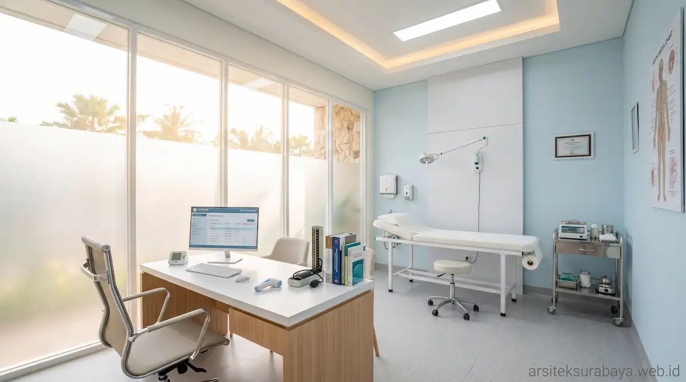

Desain klinik adalah perancangan ruang layanan kesehatan yang menata alur pasien, kebersihan, privasi, dan kenyamanan sehingga tenaga medis dapat bekerja efisien dan pasien merasa aman.
Beberapa hal kunci yang perlu diperhatikan mencakup: jenis layanan dan jumlah pasien harian menjadi dasar menentukan ruang yang dibutuhkan, alur pasien yang jelas dari pendaftaran hingga farmasi mengurangi antrean, ventilasi serta cahaya alami mendukung kebersihan, dan aksesibilitas untuk lansia serta difabel perlu direncanakan sejak awal denah.
1. Apa yang Perlu Dipertimbangkan Saat Mendesain Klinik?
Klinik berbeda dari toko atau kantor karena penggunanya adalah orang yang sedang tidak sehat, sering datang bersama keluarga, dan membutuhkan privasi. Desain perlu menenangkan, mudah dipahami, dan memudahkan petugas bergerak.
Sebelum menggambar denah, tentukan jenis layanan (umum, gigi, estetika, atau spesialis), jumlah dokter, perkiraan pasien per hari, dan rencana pengembangan layanan. Informasi ini menentukan luas ruang dan jumlah ruang periksa.
2. Bagaimana Menata Alur Pasien dan Zonasi Ruang?
Alur pasien idealnya sederhana dan searah. Urutan umumnya meliputi:
- Area penerimaan: Parkir, teras, dan meja pendaftaran.
- Ruang tunggu: Nyaman, terang, dan tidak bersinggungan langsung dengan jalur tindakan.
- Ruang periksa dan tindakan: Menjaga privasi visual dan suara pasien secara optimal.
- Farmasi dan kasir: Dekat dengan pintu keluar agar pasien tidak berputar kembali.
- Area staf dan penunjang: Ruang istirahat, penyimpanan, dan jalur petugas terpisah dari jalur pasien.
- Area servis: Penyimpanan bahan habis pakai dan pengelolaan limbah medis sesuai ketentuan.
Pemisahan area bersih dan kotor serta jalur staf dan pasien membantu menjaga kebersihan dan efisiensi kerja operasional klinik.

3. Bagaimana Menciptakan Ruang yang Nyaman, Bersih, dan Ramah Semua Pengguna?
Kenyamanan dan higienitas dapat dicapai melalui beberapa penerapan desain berikut:
- Kualitas udara: Ventilasi alami dan mekanis yang baik, serta penempatan AC yang tidak menimbulkan titik pengap.
- Cahaya alami dan buatan: Terang dan merata, terutama di ruang periksa. Prinsip pencahayaan alami dapat dibaca pada artikel pentingnya sistem pencahayaan alami untuk kesehatan rumah.
- Material higienis: Lantai anti-selip, dinding dan permukaan yang mudah dibersihkan, serta sambungan minim celah kotor.
- Akustik dan privasi: Dinding dan pintu ruang periksa dirancang agar percakapan medis tidak terdengar ke ruang tunggu.
- Aksesibilitas: Penyediaan ramp, pintu yang cukup lebar, toilet difabel, serta penunjuk arah yang informatif.
- Suasana menenangkan: Penggunaan warna netral, tanaman hias, dan material hangat untuk mereduksi rasa cemas pasien.
4. Apa Perbedaan Kebutuhan Ruang Berbagai Jenis Klinik?
Gambaran umum berikut membantu menyusun daftar kebutuhan ruang awal, di mana detail pastinya tetap menyesuaikan layanan medis Anda:
| Jenis Layanan | Ruang Inti | Perhatian Khusus | Cocok Untuk |
|---|---|---|---|
| Praktik Dokter Mandiri | Ruang tunggu, ruang periksa, dan toilet | Privasi dan alur sederhana | Satu dokter dengan volume pasien terbatas |
| Klimik Pratama | Pendaftaran, beberapa ruang periksa, tindakan, farmasi | Zonasi dan alur pemisahan pasien | Layanan umum dengan kapasitas banyak pasien |
| Klinik Gigi & Estetika | Ruang tindakan, ruang steril, dan konsultasi | Instalasi air, listrik, dan ventilasi khusus | Layanan perawatan medis terjadwal |
| Klinik Spesialis | Ruang periksa khusus dan fasilitas penunjang | Kebutuhan alat medis dan tata letak khusus | Layanan spesifik dengan peralatan medis tertentu |
5. Ruko, Rumah Alih Fungsi, atau Bangunan Baru: Mana yang Sesuai?
Ruko dan rumah alih fungsi biasanya lebih cepat dan efisien untuk memulai, tetapi tata ruangnya dibatasi oleh struktur eksisting. Sementara itu, bangunan baru memberi kebebasan penuh merancang alur dan sistem sanitasi, meskipun butuh waktu dan investasi awal lebih besar.
Jika Anda memilih ruko, simak panduan pengolahan tampilan eksterior pada artikel kiat desain fasad komersial ruko agar tempat praktik Anda mudah dikenali publik.
6. Apa Peran Arsitek dalam Persiapan Bangunan Klinik?
Arsitek membantu menerjemahkan kebutuhan operasional medis menjadi denah, fasad, interior, dan gambar kerja teknis, serta mendampingi kelengkapan dokumen Persetujuan Bangunan Gedung (PBG).
Sedangkan izin operasional klinik dan legalitas tenaga kesehatan tetap mengikuti regulasi Kementerian Kesehatan dan Dinas Kesehatan setempat. Anda dapat mempelajari proses tata kelola perizinan fisiknya di artikel peran arsitek dalam pengurusan PBG/IMB.
7. Kesalahan Umum saat Merancang Klinik
- Ruang tunggu terlalu sempit: Menyebabkan antrean meluber hingga ke teras atau area parkir.
- Jalur pasien dan staf bersilangan: Mengganggu privasi tindakan serta standar kebersihan medis.
- Mengabaikan instalasi teknis awal: Terlambat merencanakan titik air bersih, limbah cair, dan kelistrikan medis.
- Kurang mengantisipasi pengembangan: Tidak menyisakan ruang jika ada penambahan dokter atau unit tindakan di masa depan.
- Melupakan aksesibilitas difabel: Lansia dan pengguna kursi roda kesulitan saat mengakses fasilitas klinik.
8. Pertanyaan Umum (FAQ)
Apa yang pertama harus dipikirkan saat mendesain klinik?
Mulailah dari jenis layanan dan jumlah pasien harian. Dari situ ditentukan kebutuhan ruang inti, alur pasien, dan perkiraan luas bangunan yang sesuai.
Bolehkah klinik memakai ruko atau rumah yang dialihfungsikan?
Bisa, dengan syarat peruntukan lahan dan bangunan sesuai ketentuan setempat serta tata ruangnya dapat disesuaikan. Periksa kondisi struktur, akses, dan perizinannya sejak awal.
Mengapa alur pasien penting dalam desain klinik?
Alur yang jelas mengurangi antrean menumpuk, menjaga privasi pasien, dan memisahkan area bersih dari area kotor sehingga kegiatan klinik lebih tertib dan higienis.
Apakah desain klinik harus ramah difabel?
Sebaiknya ya. Ramp, pintu yang cukup lebar, lantai tidak licin, dan toilet yang mudah diakses membuat klinik dapat digunakan pasien lansia, difabel, dan orang tua dengan anak kecil.
Apakah arsitek mengurus izin operasional klinik?
Arsitek membantu sisi bangunan, seperti gambar desain dan persiapan PBG. Izin operasional dan perizinan tenaga kesehatan mengikuti ketentuan Kementerian Kesehatan dan dinas kesehatan setempat, jadi perlu dipastikan ke instansi terkait.
Apakah bisa mendesain klinik sekaligus interiornya?
Bisa. Merancang bangunan dan interior dalam satu tim membantu menjaga alur ruang, pencahayaan, dan material tetap konsisten dengan citra klinik.